Edit Content in Print Preview
This document provides information about interactive document editing in Print Preview that enables you to customize field values directly in a previewed document before printing or exporting it.
Content Editing Overview
When content editing is enabled for a report control (either unbound or data-aware), it is possible to customize the corresponding field values in Print Preview.
To enable content editing for a report control, expand the Behavior category, select the Edit Options section and set the Enabled property to Yes.
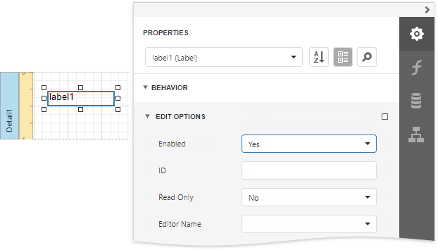
When the Enabled property is set to Yes and the ReadOnly property is set to No, the control's content can be edited in Print Preview (clicking a field will invoke the appropriate editor).
To highlight all editing fields available in a document, click the Editing Fields  button on the Print Preview toolbar. This button is disabled when there are no such fields in a document.
button on the Print Preview toolbar. This button is disabled when there are no such fields in a document.
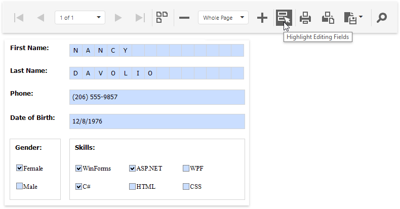
Content Editing Specifics
When enabling content editing in your report, consider the following.
The changes made to a control's content in Print Preview have no effect on other parts of the document (e.g., the related summary results, grouping, sorting, bookmarks and other settings that have already been processed before generating the document).
A control's Can Grow setting is ignored for editing fields.
Multi-line values can only be entered when no mask is applied to an editing field. The editing area of a field cannot exceed the original dimensions of a control.
Values entered into editing fields are reset back to their defaults after refreshing the document (e.g., when submitting report parameter values and expanding or collapsing data in a drill-down report).
It is impossible to edit content of a control that has its Drill-Down Control property specified.
Field values entered in Print Preview for controls placed onto the Top Margin and Bottom Margin bands are not preserved when the report is exported to TXT or CSV, as well as the following formats as a single file.
- HTML
- MHT
- RTF
- XLS
- XLSX
- image
To learn about the specifics of editing different kinds of content, see the following sections in this document.
Text Editors
The Label, Table Cell and Character Comb controls can be assigned editors to customize their content in Print Preview.
To enable content editing for these controls, expand the Behavior category, select the Edit Options section and set the Enabled property to Yes.
The following editors can be used to customize a field's content in Print Preview.
Default Editor
By default, the Editor Name property is not specified, and a memo edit is used as a standard editor.
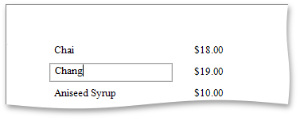
Specific Value Editors
You can assign a specific editor to a control using its Editor Name property.
Note
This option is disabled for the Character Comb control.
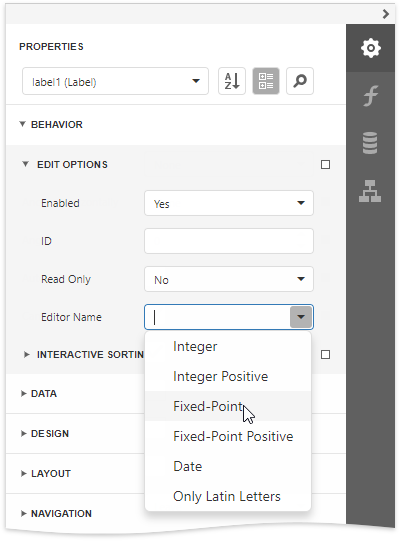
Note
If a table cell contains other controls, its editing is disabled (but not the editing of the controls contained in this cell), which is illustrated in the following image.

Character Comb Editors
The Character Comb control displays text so that each character is printed in an individual cell.
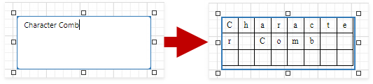
Specify the Character Comb's Edit Options | Editor Name property to use a text editor, as described in the Text Editors section above.
Check Box Editor
The Check Box control's value can be edited in Print Preview.
To enable content editing for a check box, expand the Behavior category, select the Edit Options section and set the Enabled property to Yes.
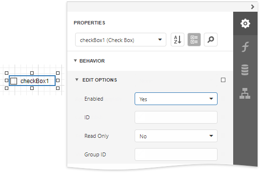
In Print Preview, the control's behavior depends on the Group ID setting.
When this property is set to null or an empty string value, a check box can be switched either to the "checked" or "unchecked" state (the "intermediate" state is not supported) independently on other available check boxes.
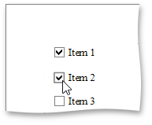
Otherwise, the field editor behaves like a radio button, and editors with the same Group ID value belong to a single logical group (i.e., only one option can be selected within a group at a time).
Image Editors
Image editors are used to customize the Picture Box report control's content in Print Preview.
To enable content editing for a picture box, expand the Behavior category, select the Edit Options section and set the Enabled property to Yes.
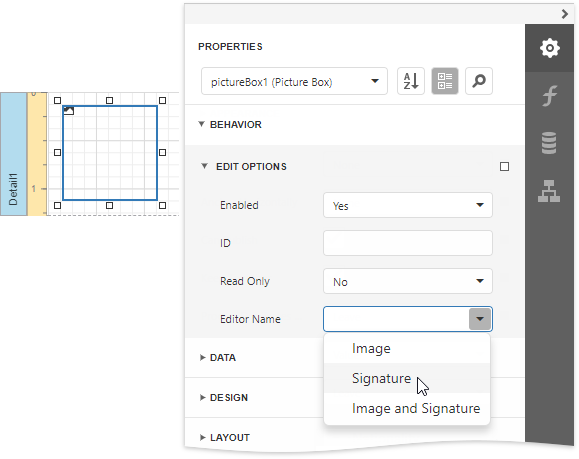
Use the control's Editor Name property to assign one of the following image editors.
Image Editor
Allows you to load an image and specify the image's size options.
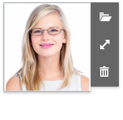
Signature Editor
Allows you to specify brush options and draw a signature.
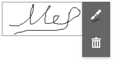
Image and Signature Editor (default)
Allows you to load an image and draw a signature. The image's size options and brush options are available.
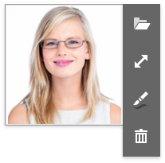
All the image editors listed above can include the menu item. This item is available only when the Picture Box control has an original image.
Export Editable Fields to PDF AcroForms
Enable the report's Export Options | PDF Export Options | Export Editing Fields to AcroForms property to export text fields, check boxes, character combs, and image editors to PDF as editable form fields (AcroForms).
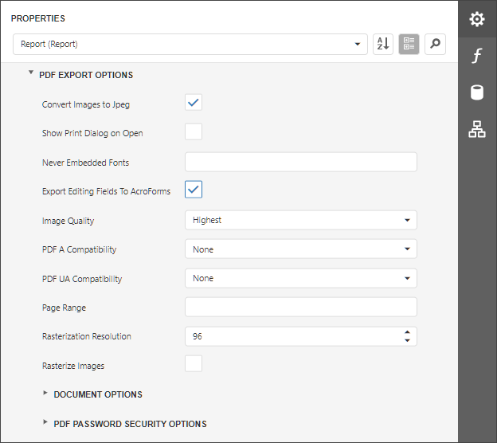
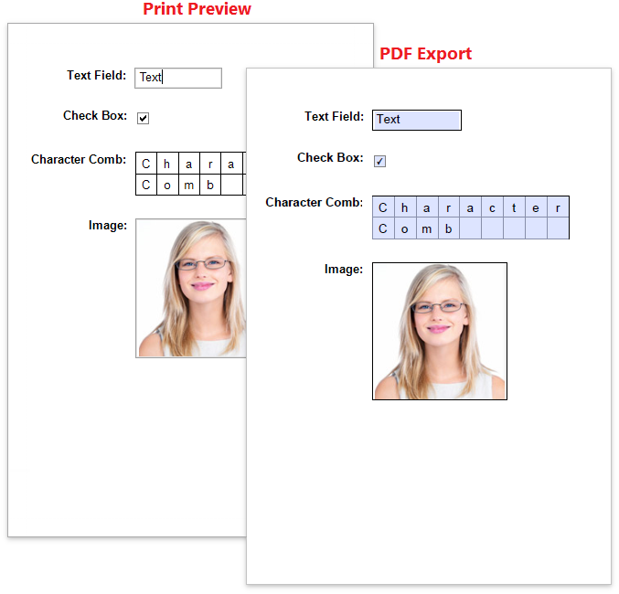